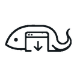

LuzCrawl 使用说明
3.0.0 · 真实浏览器检索 · HTML 与媒体证据 · 本地经验1. 安装
仓库根目录就是技能目录，完整步骤见仓库的 安装说明。简要：
- 安装 Node.js 24.5+ 和 Microsoft Edge（不需要其他插件或工具）；把仓库放进 Agent 的技能目录，在该目录运行
node scripts/luz-crawl.mjs install。 - 扩展页：开发者模式 → 加载解压缩的扩展 →
browser-extension/（其中直接有 manifest.json）。旧的 OpenCLI 桥接扩展与 LuzCrawl 互不影响。 - 运行
node scripts/luz-crawl.mjs doctor，确认 ready 和 bundled_loaded 均为 true。扩展文件更新后在扩展管理页“重新加载”。
2. 使用
每项需求按这个顺序：自检 → 建一个任务目录 → 读经验 → 搜索与采集（每条命令都带同一个 --out）。
node scripts/luz-crawl.mjs doctor $f = (node scripts/luz-crawl.mjs begin "浏览器自动化工具" --out "D:\输出根" --new | ConvertFrom-Json).folder node scripts/luz-crawl.mjs experience --query "浏览器自动化" node scripts/luz-crawl.mjs search github "browser automation" --read 0 --out $f node scripts/luz-crawl.mjs capture "https://example.com/article" --download --out $f node scripts/luz-crawl.mjs collect "浏览器自动化工具" --read 1 --out $f
默认先在后台无窗口读取；读不到正文时在已连接的 Edge 里以最小化窗口补读一次；仍需登录或验证时才把页面调到前台，请你手动完成后 continue TASK_ID，合集再用 report COLLECTION_DIRECTORY 刷新。pending 查看待办，明确取消用 cancel。正常完成只关闭本任务的工具页，保留你原有的标签。
给 Agent 的提示词：
3. 保存目录
扩展弹窗：默认保存目录 → 输入绝对路径 → 保存，下一次命令 / Agent 采集生效。也可以运行：
node scripts/luz-crawl.mjs remember --out "D:\输出根" --format html
优先使用本次 --out，其次浏览器 / 命令最新保存的目录，都没有时回退到当前目录的 outputs/luz-crawl/。输出根要放在技能目录之外。成品 HTML 在输出根，与 raw/ 同级；每项需求的证据、媒体和 爬取总结.html 在 raw/NNN_任务/ 里。同一任务里重复采集同一网址会校验后自动续接，不会覆盖。单图 25 MiB、单视频 250 MiB 以内，由扩展在浏览器内取回，不弹下载面板；需要登录 Cookie 的媒体改用浏览器下载补取。个人经验保存在技能的 opencli/memory/，不进入仓库。
4. 接口 / 排错
浏览器动作
[
{ "action": "read" },
{ "action": "scroll", "direction": "down", "amount": 600 },
{ "action": "screenshot" }
]
node scripts/luz-crawl.mjs browser "https://example.com" --file actions.json --out $f
node scripts/luz-crawl.mjs schema
node scripts/luz-crawl.mjs policyJSON 保存为 actions.json，命令另行运行。支持定位、表单、提交、条件等待、提取与截图，最多 20 步；写操作需明确授权和 --allow-write，用 expect 核验效果。结果未知时不重放；读取有限重试，429 后持久冷却。真实点赞 / 发送尚未验收，密码由用户手动输入。
常见问题
断连：运行 doctor 看 state 与 hint，检查扩展路径与 --profile，更新后重载扩展；目录未同步先重载扩展。partial 查看 limitations；404、限流和传输错误不等于未登录。评论仅本次加载，隐藏数值为 null；视频下载不代表字幕 / 转录完整。
可用平台与历史验证范围见仓库的 平台目录；任意合法网站都可以直接采集或站内搜索。
旧扩展移除：扩展管理页找到旧 OpenCLI / Browser Bridge → 移除；保留 LuzCrawl 和已停放任务。